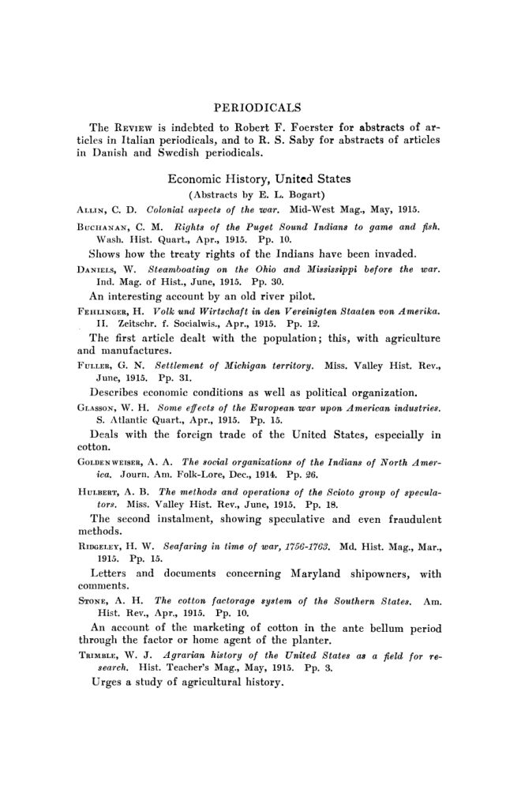

A crise de 1914, a tarifa no preço final e a fusão dos sindicatos
Leitura: 10 min
Sprague narra a crise financeira americana de 1914; Emery mostra que a tarifa nem sempre chega ao preço pago pelo consumidor; Glocker descreve a fusão de ofícios afins nos sindicatos americanos.


Na manhã de sexta-feira, 31 de julho de 1914, poucos minutos antes da hora de abertura, representantes da Bolsa de Nova York e dos bancos da câmara de compensação decidiram fechar a bolsa por tempo indeterminado. Durante a noite tinham chegado da Europa ordens de venda em enorme volume, muitas sem limite de preço. O. M. W. Sprague, da Harvard University, abre o número de setembro de 1915 da American Economic Review com a história dessa crise, que, ao contrário da de outros países, diz ele, se deveu exclusivamente à guerra.
A edição tem três artigos. Depois de Sprague, Henry C. Emery, da Yale University, que fora membro da Tariff Board de 1909 a 1912, examina a distância entre o preço que o fabricante recebe e o preço que o consumidor paga, e o que ela significa para a política tarifária. Theodore W. Glocker, da University of Tennessee, descreve como os sindicatos americanos vinham unindo ofícios afins numa mesma organização. Seguem resenhas organizadas por área, listas de livros novos, documentos oficiais, resumos de periódicos e as notas.
Como os bancos americanos atravessaram a crise de 1914?
O. M. W. Sprague (Harvard University) · “The Crisis of 1914 in the United States” · pp. 499–533
Sprague começa pelo estado normal. Nas três primeiras semanas de julho de 1914, o mercado monetário de Nova York estava calmo, e a libra à vista caíra de US$ 4,8820 para US$ 4,8690, graças a letras financeiras sacadas em antecipação às exportações de outono. Nova York estava, como em todo verão, devedora no mercado internacional de crédito de curto prazo, sem saldos no exterior para enfrentar uma demanda inesperada.
Na segunda-feira, 27 de julho, a libra abriu a US$ 4,92 e o mercado de câmbio se desorganizou: Londres deixou de aceitar e de descontar letras estrangeiras. Ao mesmo tempo, investidores europeus, que fora da Europa só encontravam mercado amplo para títulos americanos, concentraram suas vendas em Nova York. Essas vendas, argumenta Sprague, equivaliam a uma corrida aos bancos, porque exigiam pagamento imediato em ouro, e nenhum sistema bancário de país devedor suportaria fornecer o ouro e ainda financiar os compradores. O fechamento da bolsa foi inevitável.
“Desmoronou como um castelo de cartas.” (“collapsed like a house of cards”)
A diferença em relação às crises anteriores veio da lei Aldrich-Vreeland, de 1908, prorrogada pelo Federal Reserve Act e flexibilizada em 3 de agosto de 1914. Pela primeira vez, os bancos puderam emitir notas de emergência em grande escala, por meio de associações monetárias, que passaram de 21 para 44, com 2.102 bancos. Com as notas, mantiveram os pagamentos e expandiram o crédito: os empréstimos dos bancos nacionais cresceram cerca de 4%, sem as taxas extremas de outras crises.
O câmbio foi outra história. Os bancos restringiram os pagamentos em ouro de agosto a outubro, o que Sprague critica, e a normalização dependeu de um consórcio para pagar as notas da cidade de Nova York, de um fundo de ouro de US$ 100 milhões e, sobretudo, da expansão das exportações. A conclusão é dupla: o sistema bancário provou de novo ser ineficaz numa emergência, e a ação do governo e do Federal Reserve Board indicou o que o novo sistema poderia fazer.
A redução da tarifa chega ao consumidor?
Henry C. Emery (Yale University) · “The Tariff and the Ultimate Consumer” · pp. 534–553
Emery parte de uma omissão que atribui tanto à teoria quanto à prática tarifária: tratar o preço de um artigo como se fosse um só, quando há um preço do fabricante, um do atacadista e um do varejista, que não se movem juntos. O exemplo de abertura é a sardinha do Maine, vendida ao consumidor a 5 centavos a lata, o equivalente a US$ 5 a caixa, enquanto o fabricante recebia de US$ 2,30 a US$ 3,75, conforme a safra.
Com dados da Tariff Board, Emery acompanha colchas de algodão. Em 1907, uma colcha barata saía da fábrica a 65 centavos e chegava ao consumidor a US$ 1; em 1911, a fábrica cobrava 75 centavos e o consumidor pagava US$ 1,50. Um aumento de 10 centavos na fábrica virou um aumento de 50 centavos na loja. Em outro caso, uma queda de 4 centavos na fábrica reduziu o preço final em 50 centavos.
A explicação está no sistema de distribuição e nos preços fixos do varejo, como 10, 12 1/2, 15, 19 e 25 centavos a jarda. Um corte de tarifa só beneficia o consumidor se for grande o bastante para levar o artigo à faixa inferior: num cálculo do escritório da Tariff Board, reduções de 10% a 40% não mudavam o preço final de um tecido de 25 centavos, e uma de 50% o levava a 19. Num terno de lã de US$ 23, a nova tarifa sobre o tecido pouparia só 91 centavos.
Emery tira daí uma possibilidade teórica: uma tarifa moderada poderia elevar o preço do fabricante sem elevar o do consumidor, tomando a diferença da margem de distribuição. Defende uma tarifa inteligente, baseada no estudo contínuo e detalhado dos preços em cada etapa.
“A questão deve ser decidida no mercado, e não no gabinete.” (“the question must be determined in the market place and not in the study”)
Por que os sindicatos de ofício estavam se fundindo?
Theodore W. Glocker (University of Tennessee) · “Amalgamation of Related Trades in American Unions” · pp. 554–575
Glocker parte de uma contagem. Dos 133 sindicatos nacionais, a maioria filiada à American Federation of Labor, só 28 podiam ser chamados de sindicatos de ofício, no sentido de trabalho que exige habilidade e formação idênticas, e cerca de metade deles cooperava com ofícios afins por alianças frouxas. Só cinco reivindicavam todos os ofícios de uma indústria. Os cem restantes eram de tipo intermediário: uniam parte dos ofícios de uma indústria, o que o autor chama de amalgamação de ofícios afins.
As razões da fusão vinham da divisão do trabalho, que tornava as fronteiras entre ofícios menos rígidas, e da integração das empresas. Greves de um só ofício falhavam: na grande greve dos frigoríficos de Chicago em 1904, os maquinistas e foguistas das instalações, organizados em separado, continuaram trabalhando; quando receberam permissão para parar, os patrões já os tinham substituído. Boicotes e selos sindicais separados se contradiziam, trabalhadores passavam de um ofício a outro e as disputas sobre quem deveria fazer cada tarefa se multiplicavam.
A fusão também tinha custos. Quando um ofício supera em número todos os outros, tende a usar a organização em seu proveito, como os gasistas acusavam os encanadores. Por isso o autor descreve uma escala de formas, da cooperação temporária e dos acordos escritos às federações locais e nacionais e à amalgamação centralizada, mais eficiente e mais sujeita a atritos.
A conclusão é que a primeira condição para uma combinação bem-sucedida é que os ofícios tenham os mesmos empregadores. As uniões entre ofícios remotos, como a dos trabalhadores de borracha de todos os tipos, tendiam a se desfazer. Os qualificados, guiados pelo interesse próprio, resistiam a se unir aos não qualificados; se estes viessem a ser admitidos, diz Glocker, seria por motivos menos egoístas.
O que mais há na edição?
As resenhas, organizadas por área, incluem Property and Contract in their Relations to the Distribution of Wealth, de Richard T. Ely, por J. H. Underwood; An Economic History of Russia, de James Mavor, por Sidney B. Fay; The Anthracite Coal Combination in the United States, de Eliot Jones, por G. O. Virtue; Out of Work, de Frances A. Kellor, por Theresa S. McMahon; War and Lombard Street, de Hartley Withers, por Franklin Escher; e Economic Cycles: Their Law and Cause, de Henry Ludwell Moore, por Warren M. Persons. Os documentos começam pelos fatores da comercialização de produtos agrícolas; seguem os resumos de periódicos. As notas anunciam a 28ª reunião anual da American Economic Association, em Washington, de 28 a 31 de dezembro, na mesma semana do Segundo Congresso Científico Pan-Americano.
Na minha leitura
Na minha leitura, os três artigos olham para a mesma coisa de ângulos diferentes: a estrutura que fica entre uma causa e o seu efeito. Em Sprague, a guerra chega ao sistema bancário americano pela engrenagem do câmbio e das letras sobre Londres, e o resultado depende de haver ou não um meio de emitir moeda e manter pagamentos. Em Emery, a tarifa chega ao consumidor filtrada pelas margens e pelos preços fixos do varejo. Em Glocker, a divisão do trabalho chega à organização sindical por meio de interesses comuns e conflitantes entre ofícios.
O método é o mesmo nos três: descrever com detalhe como o mecanismo funciona antes de tirar conclusões gerais. Emery leva isso mais longe e propõe suspender a teoria corrente dos preços competitivos até um novo estudo indutivo dos mercados; Sprague usa a crise para estimar quanto crédito e quanta moeda o novo sistema de reserva federal precisaria fornecer numa emergência.
Glossário
- Letra financeira (finance bill)
- letra de câmbio a prazo sacada por bancos para tomar empréstimo no exterior, sem operação comercial correspondente.
- Libra à vista (demand sterling)
- taxa de câmbio para pagamento imediato em Londres.
- Ponto de exportação de ouro
- taxa de câmbio a partir da qual se torna lucrativo pagar no exterior embarcando ouro.
- Aldrich-Vreeland Act
- lei de 1908 que permitia aos bancos emitir notas de emergência por meio de associações monetárias.
- Certificado de empréstimo da câmara de compensação
- título usado pelos bancos de uma mesma câmara para liquidar saldos entre si sem dinheiro.
- Moratória
- adiamento legal do vencimento de obrigações.
- Tariff Board
- comissão federal que estudou custos e preços para orientar a política tarifária de 1909 a 1912.
- Preço fixo do varejo (set price)
- faixa de preço costumeira, como 10, 15 ou 19 centavos a jarda, que não admite valores intermediários.
- Amalgamação de ofícios afins
- sindicato que une parte dos ofícios de uma indústria numa só organização.
- Ofício auxiliar
- ofício presente em muitas indústrias, como maquinistas de instalações, foguistas e carroceiros.
Artigos (3)
- The Crisis of 1914 in the United States — O. M. W. Sprague (Harvard University) (pp. 499–533) · resenha acima · comentário completo · JSTOR
- The Tariff and the Ultimate Consumer — Henry C. Emery (Yale University) (pp. 534–553) · resenha acima · JSTOR
- Amalgamation of Related Trades in American Unions — Theodore W. Glocker (University of Tennessee) (pp. 554–575) · resenha acima · comentário completo · JSTOR
Resenhas (28)
- Richard T. Ely, Property and Contract in their Relations to the Distribution of Wealth — J. H. Underwood (pp. 576–578). Resenha de J. H. Underwood. JSTOR
- G. P. Watkins, Welfare as an Economic Quantity — George Clarke Cox (pp. 578–580). Resenha de George Clarke Cox. JSTOR
- A. G. Clarke, A Text-Book on National Economy for Use in the Schools; Alfred Bishop Mason, A Primer of Political Economy; James Mavor, Applied Economics — Frederic W. Sanders (pp. 581–583). Resenha de Frederic W. Sanders. JSTOR
- Clarence P. Gould, Money and Transportation in Maryland, 1720–1765 — Bernard C. Steiner (pp. 584–586). Resenha de Bernard C. Steiner. JSTOR
- James Mavor, An Economic History of Russia — Sidney B. Fay (pp. 586–589). Resenha de Sidney B. Fay. JSTOR
- William E. Rappard, La Révolution Industrielle et les Origines de la Protection Légale du Travail en Suisse — Walter P. Hall (pp. 589–592). Resenha de Walter P. Hall. JSTOR
- Norman Dwight Harris, Intervention and Colonization in Africa — Charles H. Levermore (pp. 592–593). Resenha de Charles H. Levermore. JSTOR
- Eliot Jones, The Anthracite Coal Combination in the United States — G. O. Virtue (pp. 597–600). Resenha de G. O. Virtue. JSTOR
- C. Colson, Railway Rates and Traffic (trad. de Transports et Tarifs) — Harry Gunnison Brown (pp. 601–603). Resenha de Harry Gunnison Brown. JSTOR
- Lincoln Hutchinson, The Panama Canal and International Trade Competition; Reuben E. Bakenhus, Harry S. Knapp e Emory R. Johnson, The Panama Canal — James H. Gilbert (pp. 603–605). Resenha de James H. Gilbert. JSTOR
- William Morse Cole, Accounts. Their Construction and Interpretation — R. H. Montgomery (pp. 606–608). Resenha de R. H. Montgomery. JSTOR
- William E. Hooper, Railroad Accounting — A. M. Sakolski (pp. 608–613). Resenha de A. M. Sakolski. JSTOR
- Frances A. Kellor, Out of Work. A Study of Unemployment — Theresa S. McMahon (pp. 614–615). Resenha de Theresa S. McMahon. JSTOR
- Report of the Bureau of Labor on the Conditions of Wage-Earning Women and Girls, State of Connecticut — Emilie Louise Wells (pp. 615–617). Resenha de Emilie Louise Wells. JSTOR
- Robert Hunter, Violence and the Labor Movement — O. D. Skelton (pp. 617–618). Resenha de O. D. Skelton. JSTOR
- Ralph Scott Harris, Practical Banking; E. L. Stewart Patterson e Franklin Escher, Banking Practice and Foreign Exchange — G. D. Hancock (pp. 619–621). Resenha de G. D. Hancock. JSTOR
- Gaston Roulleau, Les Règlements par Effets de Commerce en France et à l'Étranger — Chester A. Phillips (pp. 622–623). Resenha de Chester A. Phillips. JSTOR
- Hartley Withers, War and Lombard Street — Franklin Escher (pp. 623–625). Resenha de Franklin Escher. JSTOR
- Horace Secrist, An Economic Analysis of the Constitutional Restrictions upon Public Indebtedness in the United States — Henry B. Gardner (pp. 626–627). Resenha de Henry B. Gardner. JSTOR
- Otho G. Cartwright, The Middle West Side; Katharine Anthony, Mothers Who Must Earn — Amy Hewes (pp. 629–630). Resenha de Amy Hewes. JSTOR
- Mary Van Kleeck, Working Girls in Evening Schools. A Statistical Study — May Allinson (pp. 630–632). Resenha de May Allinson. JSTOR
- Jonathan French Scott, Historical Essays on Apprenticeship and Vocational Education — Walter P. Hall (pp. 632–633). Resenha de Walter P. Hall. JSTOR
- Government Aid to Home Owning and Housing of Working People in Foreign Countries (Bulletin of the U. S. Bureau of Labor Statistics, nº 158) — James Ford (pp. 633–634). Resenha de James Ford. JSTOR
- Sidney J. Chapman, Work and Wages, Part III. Social Betterment — William Kirk (pp. 634–637). Resenha de William Kirk. JSTOR
- Joseph Kahn e Joseph J. Klein, Principles and Methods in Commercial Education — H. S. Person (pp. 637). Resenha de H. S. Person. JSTOR
- The Metropolitan Life Insurance Company — Avard Longley Bishop (pp. 642–644). Resenha de Avard Longley Bishop. JSTOR
- Henry Ludwell Moore, Economic Cycles: Their Law and Cause — Warren M. Persons (pp. 645–648). Resenha de Warren M. Persons. JSTOR
- Statistical Atlas of the United States, preparado sob a supervisão de Charles S. Sloane — Edmund E. Day (pp. 648–651). Resenha de Edmund E. Day. JSTOR
Novos livros (13)
- New Books (pp. 583–584). Lista de livros recentes da seção de obras gerais, teoria e sua história, com notas breves. JSTOR
- New Books (pp. 593–597). Lista de livros recentes da seção de história econômica e geografia, com notas breves. JSTOR
- New Books (pp. 600–601). Lista de livros recentes da seção de agricultura, mineração, florestas e pesca, com notas breves. JSTOR
- New Books (pp. 601). Lista de livros recentes da seção de indústrias manufatureiras, com notas breves. JSTOR
- New Books (pp. 605–606). Lista de livros recentes da seção de transportes e comunicações, com notas breves. JSTOR
- New Books (pp. 613). Lista de livros recentes da seção de capital e organização capitalista, com notas breves. JSTOR
- New Books (pp. 618–619). Lista de livros recentes da seção de trabalho e organizações trabalhistas, com notas breves. JSTOR
- New Books (pp. 625–626). Lista de livros recentes da seção de moeda, preços, crédito e bancos, com notas breves. JSTOR
- New Books (pp. 627–628). Lista de livros recentes da seção de finanças públicas, tributação e tarifas, com notas breves. JSTOR
- New Book (pp. 628). Lista de livros recentes da seção de população e migração. JSTOR
- New Books (pp. 638–642). Lista de livros recentes da seção de problemas sociais e reformas, com notas breves. JSTOR
- New Books (pp. 644). Lista de livros recentes da seção de seguros e pensões, com notas breves. JSTOR
- New Books (pp. 644). Lista de livros recentes da seção de socialismo e empresas cooperativas, com notas breves. JSTOR
Documentos, periódicos e notas (3)
- Documents, Reports, and Legislation — redação e colaboradores (pp. 652–692). Resumos de documentos oficiais, a começar pelos fatores da comercialização de produtos agrícolas. JSTOR
- Periodicals — redação e colaboradores (pp. 693–730). Resumos de artigos de periódicos americanos e estrangeiros, por área. JSTOR
- Notes — redação (pp. 731–736). Notas da associação e do meio acadêmico, a começar pelo anúncio da 28ª reunião anual, em Washington, de 28 a 31 de dezembro. JSTOR
Fontes
- The Crisis of 1914 in the United States (pp. 499–533). JSTOR · Internet Archive (PDF)
- The Tariff and the Ultimate Consumer (pp. 534–553). JSTOR · Internet Archive (PDF)
- Amalgamation of Related Trades in American Unions (pp. 554–575). JSTOR · Internet Archive (PDF)
- [untitled] The American Economic Review, (1915-09-01), pages 576-578 (pp. 576–578). JSTOR · Internet Archive (PDF)
- [untitled] The American Economic Review, (1915-09-01), pages 578-580 (pp. 578–580). JSTOR · Internet Archive (PDF)
- [untitled] The American Economic Review, (1915-09-01), pages 581-583 (pp. 581–583). JSTOR · Internet Archive (PDF)
- New Books (pp. 583–584). JSTOR · Internet Archive (PDF)
- [untitled] The American Economic Review, (1915-09-01), pages 584-586 (pp. 584–586). JSTOR · Internet Archive (PDF)
- [untitled] The American Economic Review, (1915-09-01), pages 586-589 (pp. 586–589). JSTOR · Internet Archive (PDF)
- [untitled] The American Economic Review, (1915-09-01), pages 589-592 (pp. 589–592). JSTOR · Internet Archive (PDF)
- [untitled] The American Economic Review, (1915-09-01), pages 592-593 (pp. 592–593). JSTOR · Internet Archive (PDF)
- New Books (pp. 593–597). JSTOR · Internet Archive (PDF)
- [untitled] The American Economic Review, (1915-09-01), pages 597-600 (pp. 597–600). JSTOR · Internet Archive (PDF)
- New Books (pp. 600–601). JSTOR · Internet Archive (PDF)
- New Books (pp. 601). JSTOR · Internet Archive (PDF)
- [untitled] The American Economic Review, (1915-09-01), pages 601-603 (pp. 601–603). JSTOR · Internet Archive (PDF)
- [untitled] The American Economic Review, (1915-09-01), pages 603-605 (pp. 603–605). JSTOR · Internet Archive (PDF)
- New Books (pp. 605–606). JSTOR · Internet Archive (PDF)
- [untitled] The American Economic Review, (1915-09-01), pages 606-608 (pp. 606–608). JSTOR · Internet Archive (PDF)
- [untitled] The American Economic Review, (1915-09-01), pages 608-613 (pp. 608–613). JSTOR · Internet Archive (PDF)
- New Books (pp. 613). JSTOR · Internet Archive (PDF)
- [untitled] The American Economic Review, (1915-09-01), pages 614-615 (pp. 614–615). JSTOR · Internet Archive (PDF)
- [untitled] The American Economic Review, (1915-09-01), pages 615-617 (pp. 615–617). JSTOR · Internet Archive (PDF)
- [untitled] The American Economic Review, (1915-09-01), pages 617-618 (pp. 617–618). JSTOR · Internet Archive (PDF)
- New Books (pp. 618–619). JSTOR · Internet Archive (PDF)
- [untitled] The American Economic Review, (1915-09-01), pages 619-621 (pp. 619–621). JSTOR · Internet Archive (PDF)
- [untitled] The American Economic Review, (1915-09-01), pages 622-623 (pp. 622–623). JSTOR · Internet Archive (PDF)
- [untitled] The American Economic Review, (1915-09-01), pages 623-625 (pp. 623–625). JSTOR · Internet Archive (PDF)
- New Books (pp. 625–626). JSTOR · Internet Archive (PDF)
- [untitled] The American Economic Review, (1915-09-01), pages 626-627 (pp. 626–627). JSTOR · Internet Archive (PDF)
- New Books (pp. 627–628). JSTOR · Internet Archive (PDF)
- New Book (pp. 628). JSTOR · Internet Archive (PDF)
- [untitled] The American Economic Review, (1915-09-01), pages 629-630 (pp. 629–630). JSTOR · Internet Archive (PDF)
- [untitled] The American Economic Review, (1915-09-01), pages 630-632 (pp. 630–632). JSTOR · Internet Archive (PDF)
- [untitled] The American Economic Review, (1915-09-01), pages 632-633 (pp. 632–633). JSTOR · Internet Archive (PDF)
- [untitled] The American Economic Review, (1915-09-01), pages 633-634 (pp. 633–634). JSTOR · Internet Archive (PDF)
- [untitled] The American Economic Review, (1915-09-01), pages 634-637 (pp. 634–637). JSTOR · Internet Archive (PDF)
- [untitled] The American Economic Review (1915-09-01), page 637 (pp. 637). JSTOR · Internet Archive (PDF)
- New Books (pp. 638–642). JSTOR · Internet Archive (PDF)
- [untitled] The American Economic Review, (1915-09-01), pages 642-644 (pp. 642–644). JSTOR · Internet Archive (PDF)
- New Books (pp. 644). JSTOR · Internet Archive (PDF)
- New Books (pp. 644). JSTOR · Internet Archive (PDF)
- [untitled] The American Economic Review, (1915-09-01), pages 645-648 (pp. 645–648). JSTOR · Internet Archive (PDF)
- [untitled] The American Economic Review, (1915-09-01), pages 648-651 (pp. 648–651). JSTOR · Internet Archive (PDF)
- Documents, Reports, and Legislation (pp. 652–692). JSTOR · Internet Archive (PDF)
- Periodicals (pp. 693–730). JSTOR · Internet Archive (PDF)
- Notes (pp. 731–736). JSTOR · Internet Archive (PDF)
- Sumário da edição no JSTOR: The American Economic Review, vol. 5, nº 3.
Documento em domínio público (EUA, publicado antes de 1931), via JSTOR Early Journal Content e Internet Archive. Resumo e comentário do autor deste site, sem afiliação com a American Economic Association. Encontrou um erro? Escreva: a correção é publicada no próprio texto, com data.
← Nº 136 · Quem a indenização protege, a cooperativa dos merceeiros e o monopólio Nº 138 · A população da Europa, o fator de carga e o canal do Panamá →